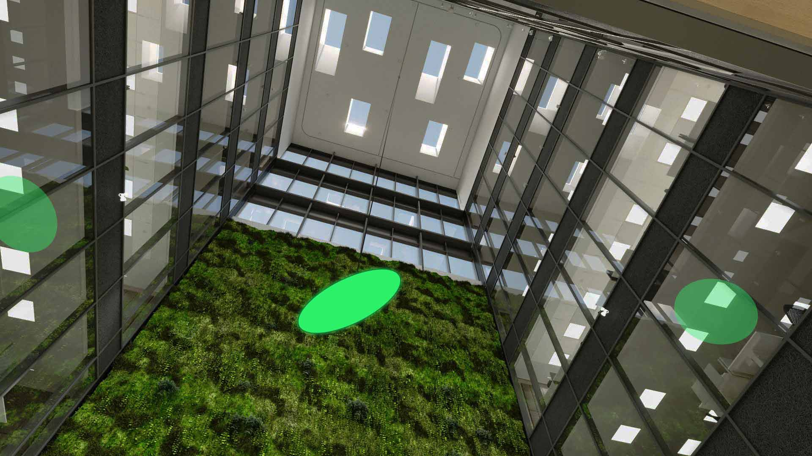
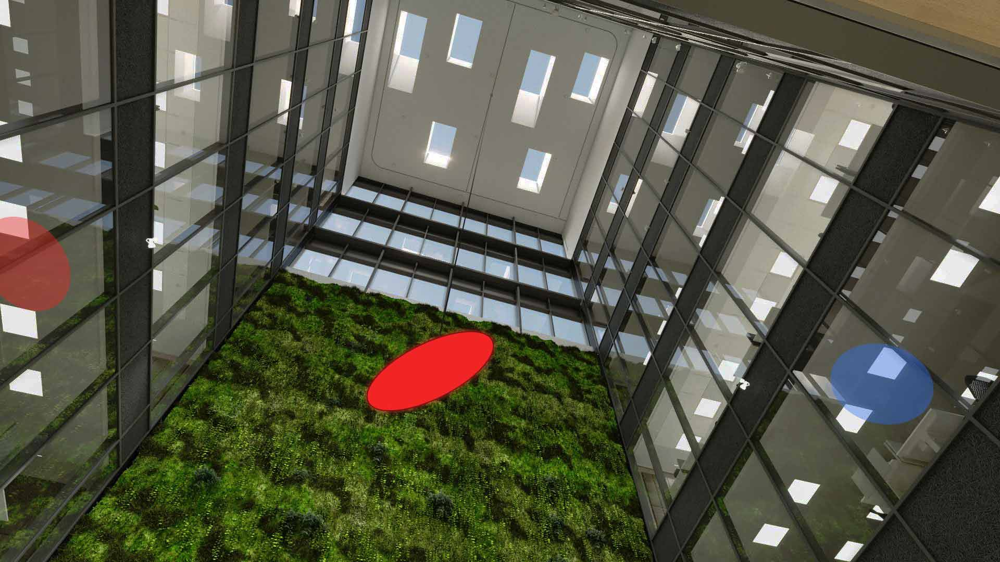

Screen Installation Concept Visualisation
Proposal for an artwork to be placed in the atrium of the Nordea Vallila Campus
Finnish visual artist Marko Vuokola
asked me for help
with visualising his ideas of a screen installation
hanging from the atrium ceiling of the newly built Nordea Vallila Campus in Helsinki. A two-sided circular
screen, 1 meter in diameter, shows alternating the basic RGB red, green, and blue colours. Marko provided me
with a reference image of the space. I tackled the challenge of finding the right angle of the screen by
taking a picture of a circular object. I determined the correct screen's reflections in the glass windows of
the building by using mirrors and observing how different angles affect the reflection of the circular
object.


Year
2024
Type
Photo Editing